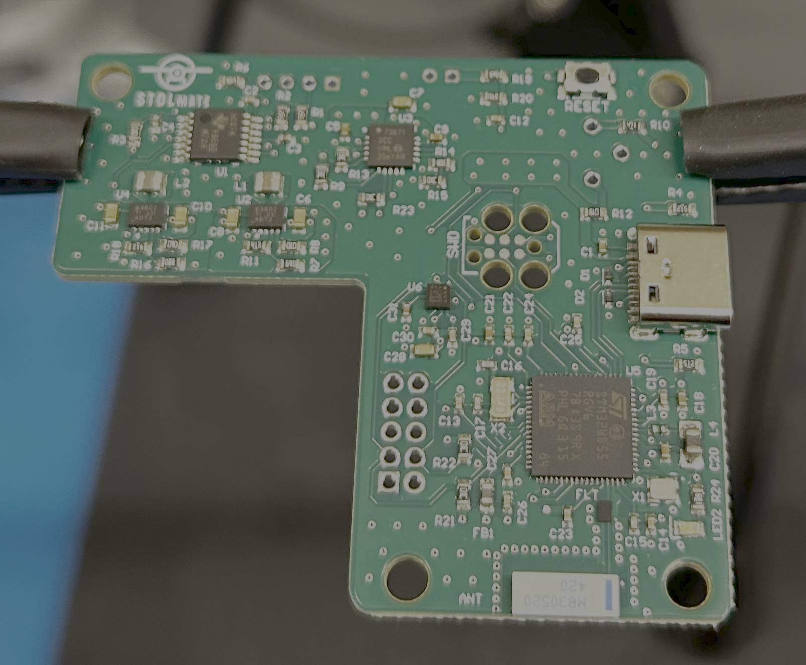
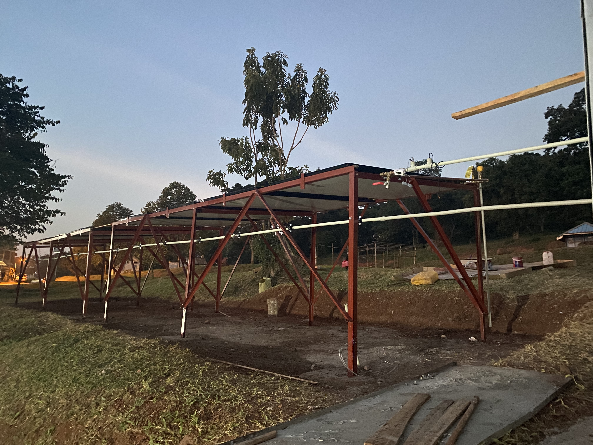
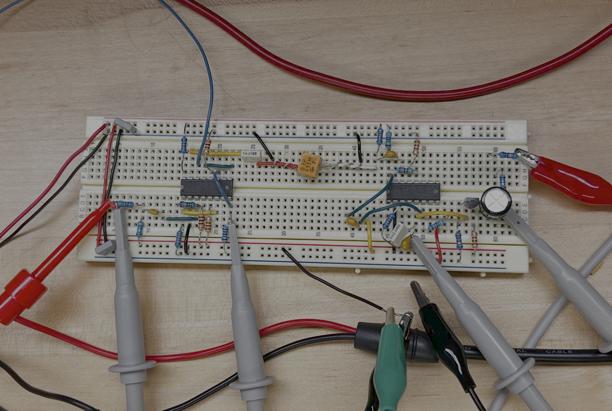
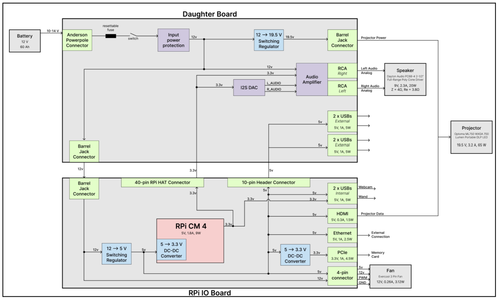
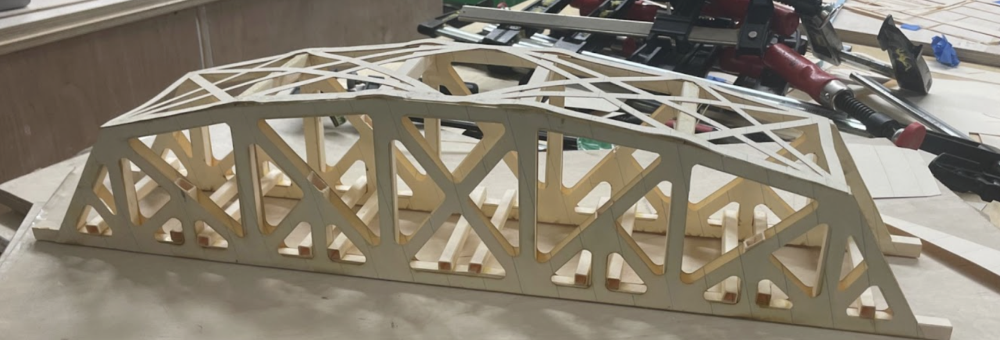

Hi! I'm Veronica
I'm an Electrical Engineering student at Dartmouth College, and I love designing systems, products, electronics, and anything related to energy. When I am not engineering, you’ll find me climbing in the Colorado mountains or surfing on the California coast.
Featured Projects

PCBA for Airplane Takeoff & Landing Metrics - STOLmate
I designed a PCB — integrating STM32WB microcontroller, Bluetooth antenna, USB-C charging, accelerometer, and TOF sensor interface – based on the previous generation development board-based prototype. I developed embedded firmware and bench-tested the PCB.

Solar Water Heating System in Uganda – Dartmouth Humanitarian Engineering
Built and operating in Uganda

High Power Discharge PCB – Dartmouth Formula Racing
I designed a high-voltage discharge safety PCB for a Formula Hybrid electric racecar to meet FSAE rules for tractive system safety. The board interfaces with high-voltage and low-voltage subsystems and is located in the car's junction box.

Split-phase Grid-tied High-Power Inverter
For residential load-shedding battery system
Course Projects

Class-D Audio Amplifier Buck Converter
I designed, simulated, built, and tested a Class-D amplifier using a buck converter topology to deliver high-efficiency audio output to a 4 Ω speaker. The design achieved over 96% peak efficiency and clean tracking of a sinusoidal audio input from 100 Hz to 20 kHz.

Heterodyne AM Radio Receiver
I built a transistor-level 455 kHz IF receiver with dual LNAs, switching mixer, ceramic filter, IF amplifier, envelope detector, and audio power amplifier output stage. I simulated my design in LTSpice, then validated the gain of the breadboarded circuit using a modulated 1.4 MHz input from function generator and an oscilloscope, then demonstrated functionality with an audio input and headphones.

Duck Car Compensator Design
I developed a system model, assessed the stability and performance, then designed and validated a lead system compensator for an autonomous vehicle with the objective of maintaining constant distance between it and a lead vehicle. My closed-loop feedback system design achieved high damping, low settling time, and no steady state error.

Looma Electrical Redesign
System & PCB Design of Looma Educational System

Truss Bridge
Our team of three created a paper truss bridge and estimated its strength and failure points. We performed hand-calculations, used SolidWorks FEA analysis to perform deflection and stress tests, then tested the built design on an Instron machine. Our bridge had the highest load-bearing-to-weight ratio of all eight groups in our class.